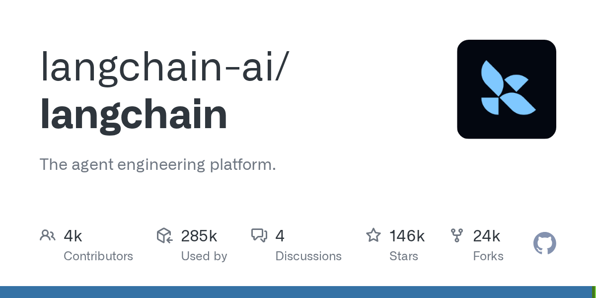

04 GitHub · langchain-ai 최근 활동 2026.09.06
모델 교체를 쉽게 하는 에이전트 골격
스타 145,732 · 이번 주 +0 · Python · MIT 사내 사용 가능 · 최근 릴리스 langchain-core==1.6.2 (09.04) · 테스트 없음 · 예제 없음 · AGENTS.md 있음

LangChain은 에이전트와 LLM 앱을 만드는 범용 프레임워크다. 저장소는 모델, 임베딩, 벡터 저장소, 외부 도구를 같은 인터페이스로 묶는 점을 앞세운다. 고수준 패키지인 Deep Agents, 저수준 제어용 LangGraph, 운영 도구인 LangSmith와도 연결된다. 이번 주에는 langchain-core 1.6.2 릴리스가 나왔다.
무엇을 하는 물건인가
LangChain은 AI 에이전트와 LLM 앱을 만들 때 공통 연결 규칙을 제공하는 프레임워크다. 업무 시스템마다 로그인 방식이 달라도 그룹웨어가 중간 규칙을 맞춰 주는 것과 비슷하다. 개발자는 모델과 도구를 바꿔 가며 실험해도 큰 틀을 다시 짜지 않아도 된다. 그래서 시범 서비스에서 운영 서비스로 옮길 때 구조를 덜 흔들 수 있다.
스펙과 도입 조건
- 언어는 Python이다.
- 패키지로 설치해 쓰는 형태다.
- 외부 모델이나 도구 연동 시 해당 서비스 접근 정보가 필요할 수 있다.
- 라이선스는 MIT다.
- 최신 릴리스는 langchain-core 1.6.2이며 발췌 정보에는 릴리스 주기가 없다.
이럴 때 쓰면 좋다
- 고객 문의 분류와 답변 초안 생성을 여러 모델로 비교 실험할 때 적합하다.
- 규정 문서 검색 서비스에서 임베딩과 벡터 저장소를 바꿔 가며 정확도를 점검할 때 유용하다.
- 야간 배치 점검용 에이전트가 사내 시스템과 외부 모델을 함께 호출해야 할 때 공통 연결층으로 쓸 수 있다.
핵심 기능
- 모델, 임베딩, 벡터 저장소를 하나의 표준 인터페이스로 묶어 바꿔 끼우기 쉽게 만든다.
- 다양한 데이터 소스와 외부·내부 시스템을 연결하는 통합 구성을 제공한다.
- 빠른 시제품 개발부터 세밀한 제어까지 단계별 추상화 수준을 고를 수 있다.
이번 릴리스에서 바뀐 점
이번 langchain-core 1.6.2에는 OpenAI용 비동기 도구 지원이 추가됐다. core 라이브러리의 mistune은 3.3.0에서 3.3.3으로, tornado는 6.5.7에서 6.5.8로 올렸다. Google GenAI 표준 콘텐츠와 Bedrock converse 표준 콘텐츠에서 불필요한 객체 변경을 피하는 수정도 들어갔다. OpenAI 비동기 도구를 쓰는 팀은 호환성을 확인하면 되고, 표준 콘텐츠 객체를 재사용하던 코드는 변경 의존이 없는지 점검할 필요가 있다.
사내 도입 체크
- 외부 모델과 도구를 붙이면 요청 데이터가 사외로 나갈 수 있다.
- 사내 문서 검색이나 고객 데이터 처리에 쓸 때는 연결 대상별 반출 통제가 필요하다.
- 유지보수 주체는 langchain-ai 조직이다.
- 상용 에이전트 빌더로 대체할 수 있지만, 모델 교체 자유도와 코드 수준 제어는 비교가 필요하다.
주요 용어
원문 정보
제목: langchain-ai/langchain
최근 활동: 2026.09.06
출처 URL: https://github.com/langchain-ai/langchain